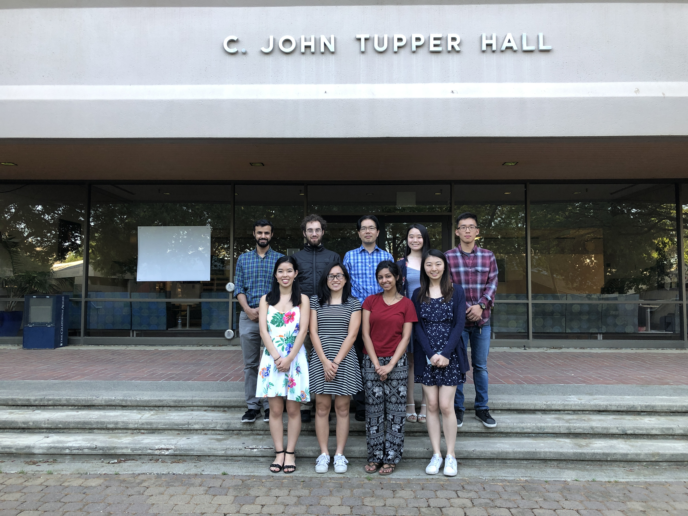

In our lab, we are studying mechanisms of sudden cardiac death, which is the major cause of death in the United States, using a physiologically detailed multiscale model of the heart from the molecular level to the tissue level. Our goal is to identify how single channel properties are linked to cellular and tissue level phenomena, such as ventricular fibrillation.